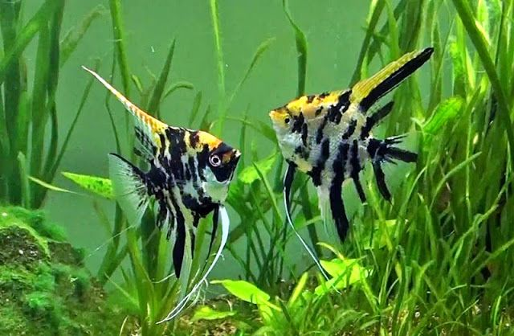

Ikan Manfish
Ikan Manfish adalah jenis ikan hias yang termasuk dalam keluarga Chiclidae. Ikan ini memiliki warna yang cantik namun elegan. Ikan ini biasanya makan makanan seperti larva nyamuk, cacing tubifeks atau chironomous.
Perawatan
Manfish merupakan jenis ikan yang mudah beradaptasi dengan lingkungan barunya, tentunya hal ini sangat memudahkan bagi kamu yang baru mau mencoba memelihara ikan ini sebagai penghias akuarium.Ukuran akuarium ikan manfish usahakan cukup luas, terlebih lagi jika kamu ingin membudidaya ikan manfish di rumah, tentunya akuarium besar akan mempermudah proses penetasan telur, karena ikan hias manfish tidak akan memakan telurnya sendiri.
Suhu air akuarium usahakan antara 26 hingga 30 derajat celcius, meskipun ikan bidadari ini bisa hidup pada seuhu berapapun, namun usahakan tetap pada suhu iedalnya supaya ikan bisa hidup dengan baik. Berikan dekorasi tanaman air, namun janga menaruh dekorasi yang tajam karena dapat melukai ikan, berikan tanaman yang memiliki dedaunan lebar karena dapat menjadi tempat berkembang telur ikan. Atur aliran air yang bergerak di dalam akuarium supaya tetap tenang, karena jika arus air terlalu cepat bisa mengganggu ikan dan dapat menimbulkan stress.
Reproduksi
Pemijahan dilakukan di akuarium berukuran 60x50x40 cm3 dengan tinggi air ± 30 cm. Ke dalam akuarium tersebut diberikan aerasi untuk menyuplai oksigen. Ikan manfish akan menempelkan telurnya pada substrat yang halus, misalnya potongan pipa PVC yang telah disiapkan/ditempatkan dalam akuarium pemijahan. Karena ikan manfish cenderung menyukai suasana yang gelap dan tenang, maka pada dinding akuarium dapat ditempelkan kertas atau plastik yang berwarna gelap. Induk manfish akan memijah pada malam hari. Induk betina menempelkan telurnya pada substrat dan diikuti ikan jantan yang menyemprotkan spermanya pada semua telur, sehingga telur-telur tersebut terbuahi. Jumlah telur yang dihasilkan setiap induk berkisar antara 500-1000 butir. Selama masa pemijahan tersebut, induk tetap diberi pakan berupa cacing Tubifex, Chironomous atau Daphnia.
Telur yang menempel pada substrat selanjutnya dipindahkan ke akuarium penmetasan telur (berukuran 60x50x40 cm3) untuk ditetaskan. Pada air media penetasan sebaiknya ditambahkan obat anti jamur, antara lain Methyline Blue dengan dosis 1 ppm. Untuk menjaga kestabilan suhu, maka ke dalam media penetasan telur tersebut digunakan pemanas air (water heater) yang dipasang pada suhu 27-28oC. Telur manfish akan menetas setelah 2-3 hari, dengan derajat penetasan telur berkisar 70-90%. Selanjutnya paralon tempat penempelan telur diangkat dan dilakukan perawatan larva hingga berumur ± 2 minggu. Pakan yang diberikan selama pemeliharaan larva tersebut berupa pakan alami yang sesuai dengan bukaan mulut larva dan memiliki kandungan protein yang tinggi, antara lain nauplii Artemia sp. Pakan tersebut diberikan 2 kali sehari ( pagi dan sore ) hingga larva berumur ± 10 hari dan dilanjutkan dengan pemberian cacing Tubifex.